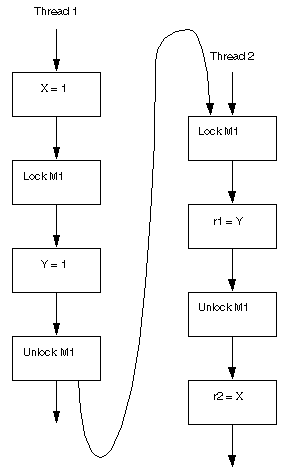
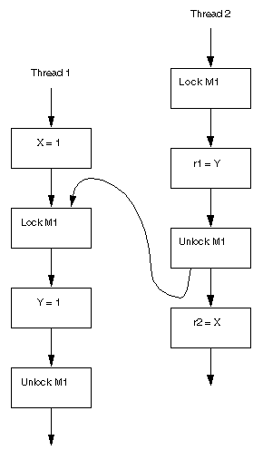

CHAPTER
17
Threads and Locks
While most of the discussion in the preceding chapters is concerned only with the behavior of code as executed a single statement or expression at a time, that is, by a single thread, each Java virtual machine can support many threads of execution at once. These threads independently execute code that operates on values and objects residing in a shared main memory. Threads may be supported by having many hardware processors, by time-slicing a single hardware processor, or by time-slicing many hardware processors.
Threads are represented by the Thread class. The only way for a user to create a thread is to create an object of this class; each thread is associated with such an object. A thread will start when the start() method is invoked on the corresponding Thread object.
The behavior of threads, particularly when not correctly synchronized, can be confusing and counterintuitive. This chapter describes the semantics of multithreaded programs; it includes rules for which values may be seen by a read of shared memory that is updated by multiple threads. As the specification is similar to the memory models for different hardware architectures, these semantics are known as the Java programming language memory model. When no confusion can arise, we will simply refer to these rules as "the memory model".
These semantics do not prescribe how a multithreaded program should be executed. Rather, they describe the behaviors that multithreaded programs are allowed to exhibit. Any execution strategy that generates only allowed behaviors is an acceptable execution strategy.
17.1 Locks
The Java programming language provides multiple mechanisms for communicating between threads. The most basic of these methods is synchronization, which is implemented using monitors. Each object in Java is associated with a monitor, which a thread can lock or unlock. Only one thread at a time may hold a lock on a monitor. Any other threads attempting to lock that monitor are blocked until they can obtain a lock on that monitor. A thread t may lock a particular monitor multiple times; each unlock reverses the effect of one lock operation.
The synchronized statement (§14.19) computes a reference to an object; it then attempts to perform a lock action on that object's monitor and does not proceed further until the lock action has successfully completed. After the lock action has been performed, the body of the synchronized statement is executed. If execution of the body is ever completed, either normally or abruptly, an unlock action is automatically performed on that same monitor.
A synchronized method (§8.4.3.6) automatically performs a lock action when it is invoked; its body is not executed until the lock action has successfully completed. If the method is an instance method, it locks the monitor associated with the instance for which it was invoked (that is, the object that will be known as this during execution of the body of the method). If the method is static, it locks the monitor associated with the Class object that represents the class in which the method is defined. If execution of the method's body is ever completed, either normally or abruptly, an unlock action is automatically performed on that same monitor.
The Java programming language neither prevents nor requires detection of deadlock conditions. Programs where threads hold (directly or indirectly) locks on multiple objects should use conventional techniques for deadlock avoidance, creating higher-level locking primitives that don't deadlock, if necessary.
Other mechanisms, such as reads and writes of volatile variables and classes provided in the java.util.concurrent package, provide alternative ways of synchronization.
17.2 Notation in Examples
The memory model specified herein is not fundamentally based in the object oriented nature of the Java programming language. For conciseness and simplicity in our examples, we often exhibit code fragments without class or method definitions, or explicit dereferencing. Most examples consist of two or more threads containing statements with access to local variables, shared global variables or instance fields of an object. We typically use variables names such as r1 or r2 to indicate variables local to a method or thread. Such variables are not accessible by other threads.
Restrictions of partial orders and functions. We use f |d to denote the function given by restricting the domain of f to d: for all x in d, f |d(x) = f(x) and for all x not in d, f |d(x) is undefined. Similarly, we use p|d to represent the restriction of the partial order p to the elements in d: for all x,y in d, p(x, y) if and only if p|d(x, y) = p(x). If either x or y are not in d, then it is not the case that p|d(x, y).
17.3 Incorrectly Synchronized Programs Exhibit Surprising Behaviors
The semantics of the Java programming language allow compilers and microprocessors to perform optimizations that can interact with incorrectly synchronized code in ways that can produce behaviors that seem paradoxical.
Trace 17.1: Surprising results caused by statement reordering - original code
|
Thread 1
|
Thread 2
|
|---|
|
1: r2 = A;
|
3: r1 = B;
|
|
2: B = 1;
|
4: A = 2;
|
Trace 17.2: Surprising results caused by statement reordering - valid compiler transformation
|
Thread 1
|
Thread 2
|
|---|
|
B = 1;
|
r1 = B;
|
|
r2 = A;
|
A = 2;
|
Consider, for example, the example shown in Trace 17.1. This program uses local variables r1 and r2 and shared variables A and B. Initially, A == B == 0.
It may appear that the result r2 == 2, r1 == 1 is impossible. Intuitively, either instruction 1 or instruction 3 should come first in an execution. If instruction 1 comes first, it should not be able to see the write at instruction 4. If instruction 3 comes first, it should not be able to see the write at instruction 2.
If some execution exhibited this behavior, then we would know that instruction 4 came before instruction 1, which came before instruction 2, which came before instruction 3, which came before instruction 4. This is, on the face of it, absurd.
However, compilers are allowed to reorder the instructions in either thread, when this does not affect the execution of that thread in isolation. If instruction 1 is reordered with instruction 2, as shown in Trace 17.2, then it is easy to see how the result r2 == 2 and r1 == 1 might occur.
To some programmers, this behavior may seem "broken". However, it should be noted that this code is improperly synchronized:
- there is a write in one thread,
- a read of the same variable by another thread,
- and the write and read are not ordered by synchronization.
This situation is an example of a data race (§17.4.5). When code contains a data race, counterintuitive results are often possible.
Several mechanisms can produce the reordering in Trace 17.2. The just-in-time compiler and the processor may rearrange code. In addition, the memory hierarchy of the architecture on which a virtual machine is run may make it appear as if code is being reordered. In this chapter, we shall refer to anything that can reorder code as a compiler.
Trace 17.3: Surprising results caused by forward substitution
|
Thread 1
|
Thread 2
|
|---|
|
r1 = p;
|
r6 = p;
|
|
r2 = r1.x;
|
r6.x = 3;
|
|
r3 = q;
|
|
|
r4 = r3.x;
|
|
|
r5 = r1.x;
|
|
|
|
|
|---|
Trace 17.4: Surprising results caused by forward substitution
|
Thread 1
|
Thread 2
|
|---|
|
r1 = p;
|
r6 = p;
|
|
r2 = r1.x;
|
r6.x = 3;
|
|
r3 = q;
|
|
|
r4 = r3.x;
|
|
|
r5 = r2;
|
|
|
|
|
|---|
Another example of surprising results can be seen in Trace 17.3. Initially: p == q, p.x == 0. This program is also incorrectly synchronized; it writes to shared memory without enforcing any ordering between those writes.
One common compiler optimization involves having the value read for r2 reused for r5: they are both reads of r1.x with no intervening write. This situation is shown in Trace 17.4.
Now consider the case where the assignment to r6.x in Thread 2 happens between the first read of r1.x and the read of r3.x in Thread 1. If the compiler decides to reuse the value of r2 for the r5, then r2 and r5 will have the value 0, and r4 will have the value 3. From the perspective of the programmer, the value stored at p.x has changed from 0 to 3 and then changed back.
17.4 Memory Model
A memory model describes, given a program and an execution trace of that program, whether the execution trace is a legal execution of the program. The Java programming language memory model works by examining each read in an execution trace and checking that the write observed by that read is valid according to certain rules.
The memory model describes possible behaviors of a program. An implementation is free to produce any code it likes, as long as all resulting executions of a program produce a result that can be predicted by the memory model.
Discussion
This provides a great deal of freedom for the implementor to perform a myriad of code transformations, including the reordering of actions and removal of unnecessary synchronization.
The memory model determines what values can be read at every point in the program. The actions of each thread in isolation must behave as governed by the semantics of that thread, with the exception that the values seen by each read are determined by the memory model. When we refer to this, we say that the program obeys intra-thread semantics. Intra-thread semantics are the semantics for single threaded programs, and allow the complete prediction of the behavior of a thread based on the values seen by read actions within the thread. To determine if the actions of thread t in an execution are legal, we simply evaluate the implementation of thread t as it would be performed in a single threaded context, as defined in the rest of this specification.
Each time the evaluation of thread t generates an inter-thread action, it must match the inter-thread action a of t that comes next in program order. If a is a read, then further evaluation of t uses the value seen by a as determined by the memory model.
This section provides the specification of the Java programming language memory model except for issues dealing with final fields, which are described in §17.5.
17.4.1 Shared Variables
Memory that can be shared between threads is called shared memory or heap memory.
All instance fields, static fields and array elements are stored in heap memory. In this chapter, we use the term variable to refer to both fields and array elements. Local variables (§14.4), formal method parameters (§8.4.1) or exception handler parameters are never shared between threads and are unaffected by the memory model.
Two accesses to (reads of or writes to) the same variable are said to be conflicting if at least one of the accesses is a write.
17.4.2 Actions
An inter-thread action is an action performed by one thread that can be detected or directly influenced by another thread. There are several kinds of inter-thread action that a program may perform:
- Read (normal, or non-volatile). Reading a variable.
- Write (normal, or non-volatile). Writing a variable.
- Synchronization actions, which are:
- Volatile read. A volatile read of a variable.
- Volatile write. A volatile write of a variable.
- Lock. Locking a monitor
- Unlock. Unlocking a monitor.
- The (synthetic) first and last action of a thread
- Actions that start a thread or detect that a thread has terminated, as described in §17.4.4.
- External Actions. An external action is an action that may be observable outside of an execution, and has a result based on an environment external to the execution.
- Thread divergence actions (§17.4.9). A thread divergence action is only performed by a thread that is in an infinite loop in which no memory, synchronization or external actions are performed. If a thread performs a thread divergence action, it will be followed by an infinite number of thread divergence actions.
Discussion
Thread divergence actions are introduced to model how a thread may cause all other threads to stall and fail to make progress
This specification is only concerned with inter-thread actions. We do not need to concern ourselves with intra-thread actions (e.g., adding two local variables and storing the result in a third local variable). As previously mentioned, all threads need to obey the correct intra-thread semantics for Java programs. We will usually refere to inter-thread actions more succinctly as simply actions.
An action a is described by a tuple < t, k, v, u >, comprising:
- t - the thread performing the action
- k - the kind of action
- v - the variable or monitor involved in the action. For lock actions, v is the monitor being locked; for unlock actions, it is the monitor being unlocked. If the action is (volatile or non-volatile) read, v is the variable being read. If the action is a (volatile or non-volatile) write, v is the variable being written
- u - an arbitrary unique identifier for the action
An external action tuple contains an additional component, which contains the results of the external action as perceived by the thread performing the action. This may be information as to the success or failure of the action, and any values read by the action.
Parameters to the external action (e.g., which bytes are written to which socket) are not part of the external action tuple. These parameters are set up by other actions within the thread and can be determined by examining the intra-thread semantics. They are not explicitly discussed in the memory model.
In non-terminating executions, not all external actions are observable. Non-terminating executions and observable actions are discussed in §17.4.9.
17.4.3 Programs and Program Order
Among all the inter-thread actions performed by each thread t, the program order of t is a total order that reflects the order in which these actions would be performed according to the intra-thread semantics of t.
A set of actions is sequentially consistent if all actions occur in a total order (the execution order) that is consistent with program order and furthermore, each read r of a variable v sees the value written by the write w to v such that:
- w comes before r in the execution order, and
- there is no other write w' such that w comes before w' and w' comes before r in the execution order.
Sequential consistency is a very strong guarantee that is made about visibility and ordering in an execution of a program. Within a sequentially consistent execution, there is a total order over all individual actions (such as reads and writes) which is consistent with the order of the program, and each individual action is atomic and is immediately visible to every thread.
If a program has no data races, then all executions of the program will appear to be sequentially consistent.
Sequential consistency and/or freedom from data races still allows errors arising from groups of operations that need to be perceived atomically and are not.
Discussion
If we were to use sequential consistency as our memory model, many of the compiler and processor optimizations that we have discussed would be illegal. For example, in Trace 17.3, as soon as the write of 3 to p.x occurred, subsequent reads of that location would be required to see that value.
17.4.4 Synchronization Order
Every execution has a synchronization order. A synchronization order is a total order over all of the synchronization actions of an execution. For each thread t, the synchronization order of the synchronization actions (§17.4.2) in t is consistent with the program order (§17.4.3) of t.
Synchronization actions induce the synchronized-with relation on actions, defined as follows:
- An unlock action on monitor m synchronizes-with all subsequent lock actions on m (where subsequent is defined according to the synchronization order).
- A write to a volatile variable (§8.3.1.4) v synchronizes-with all subsequent reads of v by any thread (where subsequent is defined according to the synchronization order).
- An action that starts a thread synchronizes-with the first action in the thread it starts.
- The write of the default value (zero,
false or null) to each variable synchronizes-with the first action in every thread. Although it may seem a little strange to write a default value to a variable before the object containing the variable is allocated, conceptually every object is created at the start of the program with its default initialized values.
- The final action in a thread T1 synchronizes-with any action in another thread T2 that detects that T1 has terminated. T2 may accomplish this by calling
T1.isAlive() or T1.join().
- If thread T1 interrupts thread T2, the interrupt by T1 synchronizes-with any point where any other thread (including T2) determines that T2 has been interrupted (by having an
InterruptedException thrown or by invoking Thread.interrupted or Thread.isInterrupted).
The source of a synchronizes-with edge is called a release, and the destination is called an acquire.
17.4.5 Happens-before Order
Two actions can be ordered by a happens-before relationship. If one action happens-before another, then the first is visible to and ordered before the second.
If we have two actions x and y, we write hb(x, y) to indicate that x happens-before y.
- If x and y are actions of the same thread and x comes before y in program order, then hb(x, y).
- There is a happens-before edge from the end of a constructor of an object to the start of a finalizer (§12.6) for that object.
- If an action x synchronizes-with a following action y, then we also have hb(x, y).
- If hb(x, y) and hb(y, z), then hb(x, z).
It should be noted that the presence of a happens-before relationship between two actions does not necessarily imply that they have to take place in that order in an implementation. If the reordering produces results consistent with a legal execution, it is not illegal.
Discussion
For example, the write of a default value to every field of an object constructed by a thread need not happen before the beginning of that thread, as long as no read ever observes that fact.
More specifically, if two actions share a happens-before relationship, they do not necessarily have to appear to have happened in that order to any code with which they do not share a happens-before relationship. Writes in one thread that are in a data race with reads in another thread may, for example, appear to occur out of order to those reads.
The wait methods of class Object have lock and unlock actions associated with them; their happens-before relationships are defined by these associated actions. These methods are described further in §17.8.
The happens-before relation defines when data races take place.
A set of synchronization edges, S, is sufficient if it is the minimal set such that the transitive closure of S with the program order determines all of the happens-before edges in the execution. This set is unique.
Discussion
It follows from the above definitions that:
- An unlock on a monitor happens-before every subsequent lock on that monitor.
- A write to a volatile field (§8.3.1.4) happens-before every subsequent read of that field.
- A call to
start() on a thread happens-before any actions in the started thread.
- All actions in a thread happen-before any other thread successfully returns from a
join() on that thread.
- The default initialization of any object happens-before any other actions (other than default-writes) of a program.
When a program contains two conflicting accesses (§17.4.1) that are not ordered by a happens-before relationship, it is said to contain a data race.
The semantics of operations other than inter-thread actions, such as reads of array lengths (§10.7), executions of checked casts (§5.5, §15.16), and invocations of virtual methods (§15.12), are not directly affected by data races.
Discussion
Therefore, a data race cannot cause incorrect behavior such as returning the wrong length for an array.
A program is correctly synchronized if and only if all sequentially consistent executions are free of data races.
Discussion
A subtle example of incorrectly synchronized code can be seen below. The figures show two different executions of the same program, both of which contain conflicting accesses to shared variables X and Y. The two threads in the program lock and unlock a monitor M1. In execution (a), there is a happens-before relationship between all pairs of conflicting accesses. However, in execution (b), there is no happens-before ordering between the conflicting accesses to X. Because of this, the program is not correctly synchronized.

(a) Thread 1 acquires lock first; Accesses to X are ordered by happens-before

(b) Thread 2 acquires lock first; Accesses to X not ordered by happens-before
If a program is correctly synchronized, then all executions of the program will appear to be sequentially consistent (§17.4.3).
Discussion
This is an extremely strong guarantee for programmers. Programmers do not need to reason about reorderings to determine that their code contains data races. Therefore they do not need to reason about reorderings when determining whether their code is correctly synchronized. Once the determination that the code is correctly synchronized is made, the programmer does not need to worry that reorderings will affect his or her code.
A program must be correctly synchronized to avoid the kinds of counterintuitive behaviors that can be observed when code is reordered. The use of correct synchronization does not ensure that the overall behavior of a program is correct. However, its use does allow a programmer to reason about the possible behaviors of a program in a simple way; the behavior of a correctly synchronized program is much less dependent on possible reorderings. Without correct synchronization, very strange, confusing and counterintuitive behaviors are possible.
We say that a read r of a variable v is allowed to observe a write w to v if, in the happens-before partial order of the execution trace:
- r is not ordered before w (i.e., it is not the case that hb(r, w), and
- there is no intervening write w' to v (i.e., no write w' to v such that hb(w, w') and hb(w', r).
Informally, a read r is allowed to see the result of a write w if there is no happens-before ordering to prevent that read.
Trace 17.5: Behavior allowed by happens-before consistency, but not sequential consistency. May observe r2 ==0, r1 == 0
|
Thread 1
|
Thread 2
|
|---|
|
B = 1;
|
A = 2;
|
|
r2 = A;
|
r1 = B;
|
|
|
|
|---|
A set of actions A is happens-before consistent if for all reads r in A, it is not the case that either hb(r, W(r)), where W(r) is the write action seen by r or that there exists a write win A such that w.v = r.v and hb(W(r), w) and hb(w, r).
Discussion
In a happens-before consistent set of actions, each read sees a write that it is allowed to see by the happens-before ordering.
For example, the behavior shown in Trace 17.5 is happens-before consistent, since there are execution orders that allow each read to see the appropriate write.
Initially, A == B == 0. In this case, since there is no synchronization, each read can see either the write of the initial value or the write by the other thread. One such execution order is
1: B = 1;
3: A = 2;
2: r2 = A; // sees initial write of 0
4: r1 = B; // sees initial write of 0
Similarly, the behavior shown in Trace 17.5 is happens-before consistent, since there is an execution order that allows each read to see the appropriate write. An execution order that displays that behavior is:
1: r2 = A; // sees write of A = 2
3: r1 = B; // sees write of B = 1
2: B = 1;
4: A = 2;
In this execution, the reads see writes that occur later in the execution order. This may seem counterintuitive, but is allowed by happens-before consistency. Allowing reads to see later writes can sometimes produce unacceptable behaviors.
17.4.6 Executions
An execution E is described by a tuple < P, A, po, so, W, V, sw, hb >, comprising:
- P - a program
- A - a set of actions
- po - program order, which for each thread t, is a total order over all actions performed by t in A
- so - synchronization order, which is a total order over all synchronization actions in A
- W - a write-seen function, which for each read r in A, gives W(r), the write action seen by r in E.
- V - a value-written function, which for each write w in A, gives V(w), the value written by w in E.
- sw - synchronizes-with, a partial order over synchronization actions.
- hb - happens-before, a partial order over actions
Note that the synchronizes-with and happens-before are uniquely determined by the other components of an execution and the rules for well-formed executions (§17.4.7).
An execution is happens-before consistent if its set of actions is happens-before consistent(§17.4.5).
17.4.7 Well-Formed Executions
We only consider well-formed executions. An execution E = < P, A, po, so, W, V, sw, hb > is well formed if the following conditions are true:
- Each read sees a write to the same variable in the execution. All reads and writes of volatile variables are volatile actions. For all reads r in A, we have W(r) in A and W(r).v = r.v. The variable r.v is volatile if and only if r is a volatile read, and the variable w.v is volatile if and only if w is a volatile write.
- Happens-before order is a partial order. Happens-before order is given by the transitive closure of synchronizes-with edges and program order. It must be a valid partial order: reflexive, transitive and antisymmetric.
- The execution obeys intra-thread consistency. For each thread t, the actions performed by t in A are the same as would be generated by that thread in program-order in isolation, with each write wwriting the value V(w), given that each read r sees the value V(W(r)). Values seen by each read are determined by the memory model. The program order given must reflect the program order in which the actions would be performed according to the intra-thread semantics of P.
- The execution is happens-before consistent (§17.4.6).
- The execution obeys synchronization-order consistency. For all volatile reads r in A, it is not the case that either so(r, W(r)) or that there exists a write win A such that w.v = r.v and so(W(r), w) and so(w, r).
17.4.8 Executions and Causality Requirements
A well-formed execution E = < P, A, po, so, W, V, sw, hb > is validated by committing actions from A. If all of the actions in A can be committed, then the execution satisfies the causality requirements of the Java programming language memory model.
Starting with the empty set as C0, we perform a sequence of steps where we take actions from the set of actions A and add them to a set of committed actions Ci to get a new set of committed actions Ci+1. To demonstrate that this is reasonable, for each Ci we need to demonstrate an execution Ei containing Ci that meets certain conditions.
Formally, an execution E satisfies the causality requirements of the Java programming language memory model if and only if there exist
- Sets of actions C0, C1, ... such that
- C0 is the empty set
- Ci is a proper subset of Ci+1
- A =
 (C0, C1, C2, ...)
(C0, C1, C2, ...)
If A is finite, then the sequence C0, C1, ... will be finite, ending in a set Cn = A. However, if A is infinite, then the sequence C0, C1, ... may be infinite, and it must be the case that the union of all elements of this infinite sequence is equal to A.
- Well-formed executions E1, ..., where Ei = < P, Ai, poi, soi, Wi, Vi, swi, hbi, Oi >.
Given these sets of actions C0, ... and executions E,sub>1, ... , every action in Ci must be one of the actions in Ei. All actions in Ci must share the same relative happens-before order and synchronization order in both Ei and E. Formally,
- Ci is a subset of Ai
- hbi |Ci = hb |Ci
- soi |Ci = so |Ci
The values written by the writes in Ci must be the same in both Ei and E. Only the reads in Ci-1 need to see the same writes in Ei as in E. Formally,
- Vi |Ci = V |Ci
- Wi |Ci-1 = W |Ci-1
All reads in Ei that are not in Ci-1 must see writes that happen-before them. Each read r in Ci - Ci-1 must see writes in Ci-1 in both Ei and E, but may see a different write in Ei from the one it sees in E. Formally,
- For any read r in Ai - Ci-1 , we have hbi(Wi(r), r)
- For any read r in (Ci - Ci-1), we have Wi(r) in Ci-1 and W(r) in Ci-1
Given a set of sufficient synchronizes-with edges for Ei, if there is a release-acquire pair that happens-before (§17.4.5) an action you are committing, then that pair must be present in all Ej, where j i. Formally,
i. Formally,
- Let sswi be the swi edges that are also in the transitive reduction of hbi but not in po. We call sswi the sufficient synchronizes-with edges for Ei. If sswi(x, y) and hbi(y, z) and z in Ci, then swj(x, y) for all ji.
If an action y is committed, all external actions that happen-before y are also committed.
- If y is in Ci, x is an external action and hbi(x, y), then x in Ci.
Discussion
Happens-Before consistency is a necessary, but not sufficient, set of constraints. Merely enforcing happens-before consistency would allow for unacceptable behaviors -- those that violate the requirements we have established for programs. For example, happens-before consistency allows values to appear "out of thin air". This can be seen by a detailed examination of Trace 17.6.
Trace 17.6: Happens-Before consistency is not sufficient
|
Thread 1
|
Thread 2
|
|---|
|
r1 = x;
|
r2 = y;
|
if (r1 != 0) y = 1;
|
if (r2 != 0) x= 1;
|
|
|
|
|---|
The code shown in Trace 17.6 is correctly synchronized. This may seem surprising, since it doesn't perform any synchronization actions. Remember, however, that a program is correctly synchronized if, when it is executed in a sequentially consistent manner, there are no data races. If this code is executed in a sequentially consistent way, each action will occur in program order, and neither of the writes will occur. Since no writes occur, there can be no data races: the program is correctly synchronized.
Since this program is correctly synchronized, the only behaviors we can allow are sequentially consistent behaviors. However, there is an execution of this program that is happens-before consistent, but not sequentially consistent:
r1 = x; // sees write of x = 1
y = 1;
r2 = y; // sees write of y = 1
x = 1;
This result is happens-before consistent: there is no happens-before relationship that prevents it from occurring. However, it is clearly not acceptable: there is no sequentially consistent execution that would result in this behavior. The fact that we allow a read to see a write that comes later in the execution order can sometimes thus result in unacceptable behaviors.
Although allowing reads to see writes that come later in the execution order is sometimes undesirable, it is also sometimes necessary. As we saw above, Trace 17.5 requires some reads to see writes that occur later in the execution order. Since the reads come first in each thread, the very first action in the execution order must be a read. If that read can't see a write that occurs later, then it can't see any value other than the initial value for the variable it reads. This is clearly not reflective of all behaviors.
We refer to the issue of when reads can see future writes as causality, because of issues that arise in cases like the one found in Trace 17.6. In that case, the reads cause the writes to occur, and the writes cause the reads to occur. There is no "first cause" for the actions. Our memory model therefore needs a consistent way of determining which reads can see writes early.
Examples such as the one found in Trace 17.6 demonstrate that the specification must be careful when stating whether a read can see a write that occurs later in the execution (bearing in mind that if a read sees a write that occurs later in the execution, it represents the fact that the write is actually performed early).
The memory model takes as input a given execution, and a program, and determines whether that execution is a legal execution of the program. It does this by gradually building a set of "committed" actions that reflect which actions were executed by the program. Usually, the next action to be committed will reflect the next action that can be performed by a sequentially consistent execution. However, to reflect reads that need to see later writes, we allow some actions to be committed earlier than other actions that happen-before them.
Obviously, some actions may be committed early and some may not. If, for example, one of the writes in Trace 17.6 were committed before the read of that variable, the read could see the write, and the "out-of-thin-air" result could occur. Informally, we allow an action to be committed early if we know that the action can occur without assuming some data race occurs. In Trace 17.6, we cannot perform either write early, because the writes cannot occur unless the reads see the result of a data race.
17.4.9 Observable Behavior and Nonterminating Executions
For programs that always terminate in some bounded finite period of time, their behavior can be understood (informally) simply in terms of their allowable executions. For programs that can fail to terminate in a bounded amount of time, more subtle issues arise.
The observable behavior of a program is defined by the finite sets of external actions that the program may perform. A program that, for example, simply prints "Hello" forever is described by a set of behaviors that for any non-negative integer i, includes the behavior of printing "Hello" i times.
Termination is not explicitly modeled as a behavior, but a program can easily be extended to generate an additional external action executionTermination that occurs when all threads have terminated.
We also define a special hang action. If behavior is described by a set of external actions including a hang action, it indicates a behavior where after the external actions are observed, the program can run for an unbounded amount of time without performing any additional external actions or terminating. Programs can hang if all threads are blocked or if the program can perform an unbounded number of actions without performing any external actions.
A thread can be blocked in a variety of circumstances, such as when it is attempting to acquire a lock or perform an external action (such as a read) that depends on external data. If a thread is in such a state, Thread.getState will return BLOCKED or WAITING.
An execution may result in a thread being blocked indefinitely and the execution's not terminating. In such cases, the actions generated by the blocked thread must consist of all actions generated by that thread up to and including the action that caused the thread to be blocked, and no actions that would be generated by the thread after that action.
To reason about observable behaviors, we need to talk about sets of observable actions.
If O is a set of observable actions foran execution E, then set O must be a subset of E's actions, A, and must contain only a finite number of actions, even if A contains an infinite number of actions. Furthermore, if an action y is in O, and either hb(x, y) or so(x, y), then x is in O.
Note that a set of observable actions are not restricted to external actions. Rather, only external actions that are in a set of observable actions are deemed to be observable external actions.
A behavior B is an allowable behavior of a program P if and only if B is a finite set of external actions and either
- There exists an execution E of P, and a set O of observable actions for E, and B is the set of external actions in O (if any threads in E end in a blocked state and O contains all actions in E, then B may also contain a hang action), or
- There exists a set O of actions such that B consists of a hang action plus all the external actions in O and for all K|O|, there exists an execution E of P with actions A, and there exists a set of actions O' such that:
- Both O and O' are subsets of A that fulfill the requirements for sets of observable actions.
- O
 O'A
O'A
- |O'|K
- O' - O contains no external actions
Discussion
Note that a behavior B does not describe the order in which the external actions in B are observed, but other (internal) constraints on how the external actions are generated and performed may impose such constraints.
17.5 Final Field Semantics
Fields declared final are initialized once, but never changed under normal circumstances. The detailed semantics of final fields are somewhat different from those of normal fields. In particular, compilers have a great deal of freedom to move reads of final fields across synchronization barriers and calls to arbitrary or unknown methods. Correspondingly, compilers are allowed to keep the value of a final field cached in a register and not reload it from memory in situations where a non-final field would have to be reloaded.
Final fields also allow programmers to implement thread-safe immutable objects without synchronization. A thread-safe immutable object is seen as immutable by all threads, even if a data race is used to pass references to the immutable object between threads. This can provide safety guarantees against misuse of an immutable class by incorrect or malicious code. Final fields must be used correctly to provide a guarantee of immutability.
An object is considered to be completely initialized when its constructor finishes. A thread that can only see a reference to an object after that object has been completely initialized is guaranteed to see the correctly initialized values for that object's final fields.
The usage model for final fields is a simple one. Set the final fields for an object in that object's constructor. Do not write a reference to the object being constructed in a place where another thread can see it before the object's constructor is finished. If this is followed, then when the object is seen by another thread, that thread will always see the correctly constructed version of that object's final fields. It will also see versions of any object or array referenced by those final fields that are at least as up-to-date as the final fields are.
Discussion
The example below illustrates how final fields compare to normal fields.
class FinalFieldExample {
final int x;
int y;
static FinalFieldExample f;
public FinalFieldExample() {
x = 3;
y = 4;
}
static void writer() {
f = new FinalFieldExample();
}
static void reader() {
if (f != null) {
int i = f.x; // guaranteed to see 3
int j = f.y; // could see 0
}
}
}
The class FinalFieldExample has a final int field x and a non-final int field y. One thread might execute the method writer(), and another might execute the method reader().
Because writer() writes f after the object's constructor finishes, the reader() will be guaranteed to see the properly initialized value for f.x: it will read the value 3. However, f.y is not final; the reader() method is therefore not guaranteed to see the value 4 for it.
Discussion
Final fields are designed to allow for necessary security guarantees. Consider the following example. One thread (which we shall refer to as thread 1) executes
Global.s = "/tmp/usr".substring(4);
while another thread (thread 2) executes
String myS = Global.s;
if (myS.equals("/tmp"))System.out.println(myS);
String objects are intended to be immutable and string operations do not perform synchronization. While the String implementation does not have any data races, other code could have data races involving the use of Strings, and the memory model makes weak guarantees for programs that have data races. In particular, if the fields of the String class were not final, then it would be possible (although unlikely) that Thread 2 could initially see the default value of 0 for the offset of the string object, allowing it to compare as equal to "/tmp". A later operation on the String object might see the correct offset of 4, so that the String object is perceived as being "/usr". Many security features of the Java programming language depend upon Strings being perceived as truly immutable, even if malicious code is using data races to pass String references between threads.
17.5.1 Semantics of Final Fields
The semantics for final fields are as follows. Let o be an object, and c be a constructor for o in which f is written. A freeze action on a final field f of o takes place when c exits, either normally or abruptly.
Discussion
Note that if one constructor invokes another constructor, and the invoked constructor sets a final field, the freeze for the final field takes place at the end of the invoked constructor.
For each execution, the behavior of reads is influenced by two additional partial orders, the dereference chain dereferences() and the memory chain mc(), which are considered to be part of the execution (and thus, fixed for any particular execution). These partial orders must satisfy the following constraints (which need not have a unique solution):
- Dereference Chain If an action a is a read or write of a field or element of an object o by a thread t that did not initialize o, then there must exist some read r by thread t that sees the address of o such that r dereferences(r , a).
- Memory Chain There are several constraints on the memory chain ordering:
- If r is a read that sees a write w, then it must be the case that mc(w, r).
- If r and a are actions such that dereferences(r , a), then it must be the case that mc(r, a).
- If wis a write of the address of an object o by a thread t that did not initialize o, then there must exist some read r by thread t that sees the address of o such that mc(r, w).
Given a write w, a freeze f, action a (that is not a read of a final field), a read r1 of the final field frozen by f and a read r2 such that hb(w, f), hb(f, a), mc(a, r1) and dereferences(r1 , r2), then when determining which values can be seen by r2, we consider hb(w, r2) (but these orderings do not transitively close with other happens-before orderings). Note that the dereferences order is reflexive, and r1 can be the same as r2.
For reads of final fields, the only writes that are deemed to come before the read of the final field are the ones derived through the final field semantics.
17.5.2 Reading Final Fields During Construction
A read of a final field of an object within the thread that constructs that object is ordered with respect to the initialization of that field within the constructor by the usual happens-before rules. If the read occurs after the field is set in the constructor, it sees the value the final field is assigned, otherwise it sees the default value.
17.5.3 Subsequent Modification of Final Fields
In some cases, such as deserialization, the system will need to change the final fields of an object after construction. Final fields can be changed via reflection and other implementation dependent means. The only pattern in which this has reasonable semantics is one in which an object is constructed and then the final fields of the object are updated. The object should not be made visible to other threads, nor should the final fields be read, until all updates to the final fields of the object are complete. Freezes of a final field occur both at the end of the constructor in which the final field is set, and immediately after each modification of a final field via reflection or other special mechanism.
Even then, there are a number of complications. If a final field is initialized to a compile-time constant in the field declaration, changes to the final field may not be observed, since uses of that final field are replaced at compile time with the compile-time constant.
Another problem is that the specification allows aggressive optimization of final fields. Within a thread, it is permissible to reorder reads of a final field with those modifications of a final field that do not take place in the constructor.
Discussion
For example, consider the following code fragment:
class A {
final int x;
A() {
x = 1;
}
int f() {
return d(this,this);
}
int d(A a1, A a2) {
int i = a1.x;
g(a1);
int j = a2.x;
return j - i;
}
static void g(A a) {
// uses reflection to change a.x to 2
}
}
In the d() method, the compiler is allowed to reorder the reads of x and the call to g() freely. Thus, A().f() could return -1, 0 or 1.
An implementation may provide a way to execute a block of code in a final field safe context. If an object is constructed within a final field safe context, the reads of a final field of that object will not be reordered with modifications of that final field that occur within that final field safe context.
A final field safe context has additional protections. If a thread has seen an incorrectly published reference to an object that allows the thread to see the default value of a final field, and then, within a final-field safe context, reads a properly published reference to the object, it will be guaranteed to see the correct value of the final field. In the formalism, code executed within a final-field safe context is treated as a separate thread (for the purposes of final field semantics only).
In an implementation, a compiler should not move an access to a final field into or out of a final-field safe context (although it can be moved around the execution of such a context, so long as the object is not constructed within that context).
One place where use of a final-field safe context would be appropriate is in an executor or thread pool. By executing each Runnable in a separate final field safe context, the executor could guarantee that incorrect access by one Runnable to a object o won't remove final field guarantees for other Runnables handled by the same executor.
17.5.4 Write Protected Fields
Normally, final static fields may not be modified. However System.in, System.out, and System.err are final static fields that, for legacy reasons, must be allowed to be changed by the methods System.setIn, System.setOut and System.setErr. We refer to these fields as being write-protected to distinguish them from ordinary final fields.
The compiler needs to treat these fields differently from other final fields. For example, a read of an ordinary final field is "immune" to synchronization: the barrier involved in a lock or volatile read does not have to affect what value is read from a final field. Since the value of write-protected fields may be seen to change, synchronization events should have an effect on them. Therefore, the semantics dictate that these fields be treated as normal fields that cannot be changed by user code, unless that user code is in the System class.
17.6 Word Tearing
One implementation consideration for Java virtual machines is that every field and array element is considered distinct; updates to one field or element must not interact with reads or updates of any other field or element. In particular, two threads that update adjacent elements of a byte array separately must not interfere or interact and do not need synchronization to ensure sequential consistency.
Some processors do not provide the ability to write to a single byte. It would be illegal to implement byte array updates on such a processor by simply reading an entire word, updating the appropriate byte, and then writing the entire word back to memory. This problem is sometimes known as word tearing, and on processors that cannot easily update a single byte in isolation some other approach will be required.
Discussion
Here is a test case to detect word tearing:
public class WordTearing extends Thread {
static final int LENGTH = 8;
static final int ITERS = 1000000;
static byte[] counts = new byte[LENGTH];
static Thread[] threads = new Thread[LENGTH];
final int id;
WordTearing(int i) {
id = i;
}
public void run() {
byte v = 0;
for (int i = 0; i < ITERS; i++) {
byte v2 = counts[id];
if (v != v2) {
System.err.println("Word-Tearing found: " +
"counts[" + id
+ "] = " + v2 + ", should be " + v);
return;
}
v++;
counts[id] = v;
}
}
public static void main(String[] args) {
for (int i = 0; i < LENGTH; ++i)
(threads[i] = new WordTearing(i)).start();
}
}
This makes the point that bytes must not be overwritten by writes to adjacent bytes
17.7 Non-atomic Treatment of double and long
Some implementations may find it convenient to divide a single write action on a 64-bit long or double value into two write actions on adjacent 32 bit values. For efficiency's sake, this behavior is implementation specific; Java virtual machines are free to perform writes to long and double values atomically or in two parts.
For the purposes of the Java programming language memory model, a single write to a non-volatile long or double value is treated as two separate writes: one to each 32-bit half. This can result in a situation where a thread sees the first 32 bits of a 64 bit value from one write, and the second 32 bits from another write. Writes and reads of volatile long and double values are always atomic. Writes to and reads of references are always atomic, regardless of whether they are implemented as 32 or 64 bit values.
VM implementors are encouraged to avoid splitting their 64-bit values where possible. Programmers are encouraged to declare shared 64-bit values as volatile or synchronize their programs correctly to avoid possible complications.
17.8 Wait Sets and Notification
17.8.1 Wait
Wait actions occur upon invocation of wait(), or the timed forms wait(long millisecs) and wait(long millisecs, int nanosecs). A call of wait(long millisecs) with a parameter of zero, or a call of wait(long millisecs, int nanosecs) with two zero parameters, is equivalent to an invocation of wait().
A thread returns normally from a wait if it returns without throwing an InterruptedException.
Let thread t be the thread executing the wait method on object m, and let n be the number of lock actions by t on m that have not been matched by unlock actions. One of the following actions occurs.
- If n is zero (i.e., thread t does not already possess the lock for target m) an
IllegalMonitorStateException is thrown.
- If this is a timed wait and the nanosecs argument is not in the range of 0-999999 or the millisecs argument is negative, an
IllegalArgumentException is thrown.
- If thread t is interrupted, an
InterruptedException is thrown and t's interruption status is set to false.
- Otherwise, the following sequence occurs:
- Thread t is added to the wait set of object m, and performs n unlock actions on m.
- Thread t does not execute any further instructions until it has been removed from m's wait set. The thread may be removed from the wait set due to any one of the following actions, and will resume sometime afterward.
- A notify action being performed on m in which t is selected for removal from the wait set.
- A notifyAll action being performed on m.
- An interrupt action being performed on t.
- If this is a timed wait, an internal action removing t from m's wait set that occurs after at least
millisecs milliseconds plus nanosecs nanoseconds elapse since the beginning of this wait action.
- An internal action by the implementation. Implementations are permitted, although not encouraged, to perform "spurious wake-ups" -- to remove threads from wait sets and thus enable resumption without explicit instructions to do so. Notice that this provision necessitates the Java coding practice of using
wait only within loops that terminate only when some logical condition that the thread is waiting for holds.
Each thread must determine an order over the events that could cause it to be removed from a wait set. That order does not have to be consistent with other orderings, but the thread must behave as though those events occurred in that order.
For example, if a thread t is in the wait set for m, and then both an interrupt of t and a notification of m occur, there must be an order over these events.
If the interrupt is deemed to have occurred first, then t will eventually return from wait by throwing InterruptedException, and some other thread in the wait set for m (if any exist at the time of the notification) must receive the notification. If the notification is deemed to have occurred first, then t will eventually return normally from wait with an interrupt still pending.
- Thread t performs n lock actions on m.
- If thread t was removed from m's wait set in step 2 due to an interrupt, t's interruption status is set to false and the wait method throws
InterruptedException.
17.8.2 Notification
Notification actions occur upon invocation of methods notify and notifyAll. Let thread t be the thread executing either of these methods on object m, and let n be the number of lock actions by t on m that have not been matched by unlock actions. One of the following actions occurs.
- If n is zero an
IllegalMonitorStateException is thrown. This is the case where thread t does not already possess the lock for target m.
- If n is greater than zero and this is a
notify action, then, if m's wait set is not empty, a thread u that is a member of m's current wait set is selected and removed from the wait set. (There is no guarantee about which thread in the wait set is selected.) This removal from the wait set enables u's resumption in a wait action. Notice however, that u's lock actions upon resumption cannot succeed until some time after t fully unlocks the monitor for m.
- If n is greater than zero and this is a
notifyAll action, then all threads are removed from m's wait set, and thus resume. Notice however, that only one of them at a time will lock the monitor required during the resumption of wait.
17.8.3 Interruptions
Interruption actions occur upon invocation of method Thread.interrupt, as well as methods defined to invoke it in turn, such as ThreadGroup.interrupt. Let t be the thread invoking u.interrupt, for some thread u, where t and u may be the same. This action causes u's interruption status to be set to true.
Additionally, if there exists some object m whose wait set contains u, u is removed from m's wait set. This enables u to resume in a wait action, in which case this wait will, after re-locking m's monitor, throw InterruptedException.
Invocations of Thread.isInterrupted can determine a thread's interruption status. The static method Thread.interrupted may be invoked by a thread to observe and clear its own interruption status.
17.8.4 Interactions of Waits, Notification and Interruption
The above specifications allow us to determine several properties having to do with the interaction of waits, notification and interruption. If a thread is both notified and interrupted while waiting, it may either:
- return normally from
wait, while still having a pending interrupt (in other works, a call to Thread.interrupted would return true)
- return from
wait by throwing an InterruptedException
The thread may not reset its interrupt status and return normally from the call to wait.
Similarly, notifications cannot be lost due to interrupts. Assume that a set s of threads is in the wait set of an object m, and another thread performs a notify on m. Then either
- at least one thread in s must return normally from
wait, or
- all of the threads in s must exit
wait by throwing InterruptedException
Note that if a thread is both interrupted and woken via notify, and that thread returns from wait by throwing an InterruptedException, then some other thread in the wait set must be notified.
17.9 Sleep and Yield
Thread.sleep causes the currently executing thread to sleep (temporarily cease execution) for the specified duration, subject to the precision and accuracy of system timers and schedulers. The thread does not lose ownership of any monitors, and resumption of execution will depend on scheduling and the availability of processors on which to execute the thread.
Neither a sleep for a period of zero time nor a yield operation need have observable effects.
It is important to note that neither Thread.sleep nor Thread.yield have any synchronization semantics. In particular, the compiler does not have to flush writes cached in registers out to shared memory before a call to Thread.sleep or Thread.yield, nor does the compiler have to reload values cached in registers after a call to Thread.sleep or Thread.yield.
Discussion
For example, in the following (broken) code fragment, assume that this.done is a non-volatile boolean field:
while (!this.done)
Thread.sleep(1000);
The compiler is free to read the field this.done just once, and reuse the cached value in each execution of the loop. This would mean that the loop would never terminate, even if another thread changed the value of this.done.
Copyright © 1996-2005 Sun Microsystems, Inc.
All rights reserved
Please send any comments or corrections via our feedback form